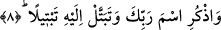

kadar gelen şeylerdendir. Herhangi bir kimsenin virdi yoksa onun havass/seçkinlere âid
özel bir vâridi/kalbe doğan ilham, feyiz ve bereketi yoktur.
Kûtu’l-kulûb’da şöyle denir: Herhangi bir kimse günlük virdlerinden herhangi birini
kaçırdığında -hatırladığında- onun mislini/benzerini yerine getirmesi müstehabtır.
Ancak bunu kazâ yollu yerine getiremez. Çünkü kazâ ancak kaçırılan farzlarla ilgilidir.
Fakat bunu telâfî ve nefsi riyâzata alıştırmak ve böylece dâimâ azimetleri yapmak
kabilinden yerine getirsin tâ ki nefsi ruhsatlara alışmasın.
8. Rabbinin adını an. Bütün varlığınla O’na yönel.
“Rabbinin adını an.” Gece ve gündüz hangi şekilde olursa olsun tesbih, tehlil, hamd,
namaz ve Kur’an okuyarak, ilim öğrenerek Rabbinin adını an. Özellikle sabah
namazının ardından güneşin batmasından önce ilim tahsil et; çünkü bu iki vakit “fetih”
ve “feyz” vaktidir. Allah’ı sürekli biçimde zikretmek mukarrabînin vazifelerindendir.
Bu zikir ister kalben, ister dille, ister organlarla olsun farketmez. Bunun gibi zikrin
ayakta, otururken, yan yatarken yapılmış olması da farketmez.
Peygamber (s.a.) Efendimiz şöyle buyurur: “Kim bunu elde ederse cennete girer”
[157] hadisteki kasdedilen Allah’ın adının zikridir. Allah, ismi anılmak sûretiyle
zikredilir. Bu nedenle Allah şöyle buyurur: “Bunu unuttuğun takdirde Allah’ı an.”
(el-Kehf, 18/24)
Zikir ve unutmak -aslında- kalbin sıfatlarındandır. Zikredilen sevgili, kalpte tecellî
ettiği zaman zikir ve zikredenlerden ikisi de fânî/yok olurlar. Nitekim benim şeyhim ve
senedim -Allah ruhunu şad eylesin- İmam Konevî’nin Fâtiha sûresinin tefsirine dâir
yazmış olduğu şerhinde şöyle der: Her kim mecâzî isimlerle -Allah’ın kendisine fırsat
verdiği kadarıyla- meşgul olup buna devam ederse hiç kuşkusuz kendisiyle, meşgul
olduğu o isim arasında bir “sır” meydana gelir ve onun ruhu -Allah’ın inâyet ve ihsânı
sâyesinde- meşgul olduğu kadar o isimle bir “münâsebet” kurar. Kul ile o isim
arasındaki sözünü ettiğimiz bu “münâsebet” -meşguliyetin kuvvet ve mükemmeliyyetine
göre- güçlü olur ve kemâle ererse o kul ile, o ismin gerçek mânâsı arasında “bu
meydana gelen münâsebet vâsıtasıyla” bir münâsebet doğar. Bu münâsebet o ilişkinin
gücü ve kemali oranındadır. Kul ile Allah Teâlâ’nın hakîkî ismi arasında meydana gelen
bu ikinci münâsebet kemal derecesine ulaştığında Hak Teâlâ kendi lütuf ve ihsanı ile
tecellî eder. Böylece kul ile Hak Teâlâ’nın arasında bir başka münâsebet doğar. Bu
münâsebet, ikinci münâsebetin gücü ve kemal derecesi mikdarınca doğar. Çünkü kul bu
münâsebet sebebiyle içindeki kutsiyeti kirlere gâlip gelir ve kul kutsiyet âlemine
münâsip hâle gelir. Bu uygunluğu kendisindeki kir, pasın kalkması oranındadır. İşte o
anda Hak Teâlâ o ismin yer tuttuğu mertebe ne ise o mertebenin üzerinden kuluna